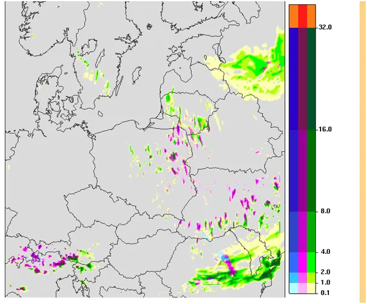
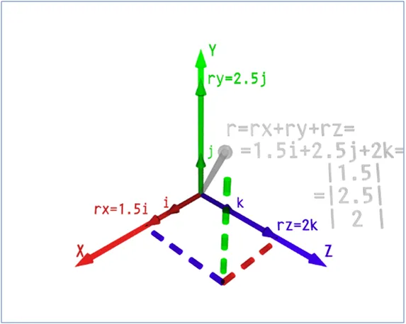

Jak efekt motyla porwał się z motyką na Słońce
Choć temperatury będą w weekend dodatnie to na niedzielne popołudnie prognozowany jest zimny opad, a lokalnie nawet deszcz ze śniegiem. Jest to prognoza ICM, warszawskiego ośrodka akademickiego, bardzo dobra zazwyczaj ale jest sprzeczna tym razem z modelami globalnymi. Dziś meteorologia to awansowana matematyka. Model ICM jest bardzo dokładny, generuje prognozy punktowe na siatce o rozdzielczości 10km, czyli drobniejszej niż typowy powiat.

Obecnie różne modele są zgodne, że najbliższe ok. 10 dni to ciągła dominacja północnych cyrkulacji i jeśli analizuje się z dnia na dzień te prognozy to faktycznie nie ma widoków na potencjalne ciepło w naszej okolicy. Niże znad Europy Zachodniej zamiast kierować się na wschód mają podążać na zachód, nad ocean, wbrew typowym schematom.
Modele pogodowe to bardzo duże zestawy układów równań z wieloma niewiadomymi. Jak pisałem już zasadniczo nie da rozwiązać zadania, gdzie są więcej niż 2 niewiadome. Gdyby w całym Kosmosie były tylko 3 cząstki elementarne ich wzajemne interakcje byłyby nieprzewidywalne a szacowana liczba protonów i neutronów to 2 *10^80 w obserwowanym przez człowieka Kosmosie. O tym dlaczego mimo to wokół nas nie panuje chaos pisałem tu: https://pawelklimczewski.pl/2024/08/20/4143/
W pogodzie widzimy bardzo przewidywalny porządek, atmosfera w pełni jest zgodna z prawami fizyki i nie może w niej się stać nic z tymi prawami niezgodnego. Dlaczego zatem nie możemy tego przewidzieć mając potężne komputery? W celu fałszywego wyjaśnienia tego opinii publicznej tworzy się różne gusła typu "efekt motyla". W skrócie jest to teoria mówiąca, że gdzieś na drugim końcu świata, mikroskopijne zdarzenie jak ruch skrzydeł motyla rozpoczyna lawinę zdarzeń wtórnych , które mogą się skończyć huraganem tysiące kilometrów dalej. Strach myśleć, jakie by były konsekwencje ludzkich działań, takich jak wysyłanie rakiet w Kosmos, czy nawet start każdego samolotu. Atmosferę najłatwiej zrozumieć jako sumę wektorów. Na nasze nieszczęście to wiele sum wektorów różnych sił i pól.

Mamy dla każdej cząsteczki wektor jej pędu, każdy foton możemy rozpatrywać jako wektor, mamy nieprzewidywalne oddziaływania promieniowania kosmicznego, czynników jest mnóstwo, ale nie liczba zmiennych jest przeszkodą w przewidywaniu przyszłości a natura świata. W skali naszej egzystencji wiemy, że jadąc 100 km/h za godzinę będziemy 100 km dalej, jeśli zanurzymy wiadro w studni naleje się do niego woda po brzegi, itd.
W świecie cząsteczek tak nie jest, spotkanie kwantu podczerwieni z cząstką pary wodnej nie musi zakończyć się ich interakcją, w tym świecie możemy mówić tylko o prawdopodobieństwach. Jeśli zjawisko x ma 70% prawdopodobieństwa zajścia to na 1000 cząstek +-700 przejdzie daną przemianę a 300 nie, ale nie wiemy nigdy, które to cząstki będą.
Mimo pozornego chaosu ten chaos ma swoje dystrybuanty , czyli funkcje, wg których ten pozorny chaos jest rozdzielany, jest w tym paradoks, ale nic na to naszym umysłem nie poradzimy. Dzięki tym dystrybuantom w upalny dzień nie pada zwykle śnieg, ale nie jest to niemożliwe.
Ponadto w układzie termodynamicznym, jakim jest atmosfera pojawiają się w sposób losowy tak potężne zjawiska jak wybuchy wulkanów oraz bardzo częste "ostrzały" gigantycznymi porcjami promieniowania, czy to ze Słońca, czy z głębokiego Kosmosu. Taki zastrzyk może przesądzić o powstaniu tysięcy chmur nad całym kontynentem i licznych burz, dlatego los podmuchu wiatru spod skrzydeł naszego sympatycznego motyla jest przesądzony. Będzie on oczywiście składową w całym rachunku, tak samo jak składową będzie podmuch wywołany galopem całego stada Słoni machających uszami, obie te składowe mogą tylko o umowną jedną krople wody zmniejszyć nawałnicę miliardów kropel, ale jej nie zatrzymają, ani jej nie wywołają. Ludzka intuicja opisuje to doskonale w powiedzeniu "porywać się z motyką na Słońce” . Zatem spokojnie musimy znosić chłodny maj z nadzieją, że stanie się coś innego niż podają matematycy, bo to zupełnie możliwe.
Paweł Klimczewski